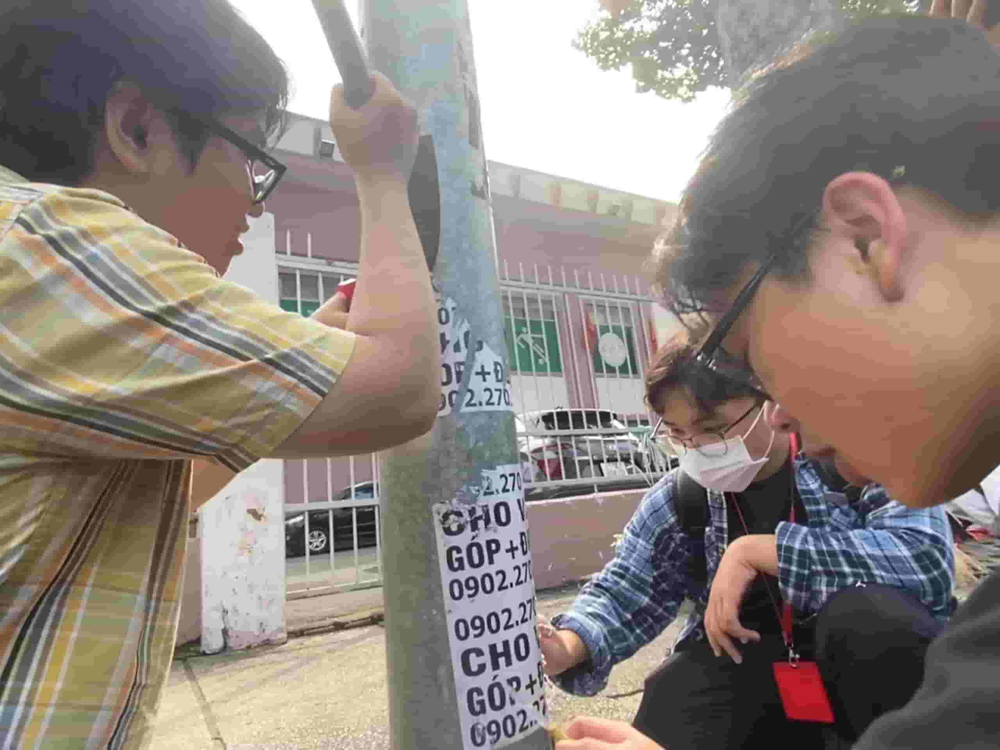

Nguyễn Tiến Luật-23127221 (Leader)
ntluat23@clc.fitus.edu.vn

Trần Lý Nhật Hào-23127187
tlnhao23@clc.fitus.edu.vn
Huỳnh Hạo Nam-23127431
hhnam23@clc.fitus.edu.vn

Lê Thanh Phong-23127452
ltphong23@clc.fitus.edu.vn
Nguyễn Tấn Lộc-23127406
ntloc23@clc.fitus.edu.vn

Phạm Thiên Minh-23127424
ptminh23@clc.fitus.edu.vn



Nhặt rác là một hoạt động có ích cho môi trường và sức khỏe. Khi nhặt rác, chúng ta không chỉ giúp làm sạch đường phố, công viên hay bãi biển, mà còn rèn luyện thể chất và tinh thần. Nhặt rác cũng là một cách để thể hiện trách nhiệm và tình yêu với quê hương.
Tuy nhiên, thực trạng nhặt rác ở nước ta còn nhiều khó khăn và vấn đề. Một số người vô ý thức vứt rác bừa bãi, gây ô nhiễm và mất mỹ quan. Một số nơi thiếu hụt nguồn lực và thiết bị để thu gom và xử lý rác thải. Một số người nhặt rác không đảm bảo an toàn và vệ sinh, có thể tiếp xúc với các chất độc hại hoặc lây nhiễm bệnh tật. Do đó, cần có sự phối hợp của cả cộng đồng để nâng cao ý thức và hành động nhằm bảo vệ môi trường.
Xé giấy quảng cáo trên cột điện là một hành động không nên làm vì nó có thể gây hại cho môi trường và ảnh hưởng đến quyền lợi của người đăng quảng cáo. Giải thích như sau:
- Xé giấy quảng cáo sẽ làm tăng lượng rác thải, gây ô nhiễm và lãng phí nguồn tài nguyên. Giấy quảng cáo cũng có thể bị bay vào đường, gây nguy hiểm cho người và phương tiện giao thông.
- Xé giấy quảng cáo cũng là vi phạm quyền sở hữu trí tuệ của người đăng quảng cáo, làm mất đi hiệu quả của chiến dịch tiếp thị và gây thiệt hại về kinh tế. Người đăng quảng cáo có thể kiện tụng hoặc yêu cầu bồi thường nếu bị xé giấy quảng cáo.
Giúp đỡ người vô gia cư là một hành động nhân đạo và có ý nghĩa. Nó thể hiện sự quan tâm và chia sẻ của cộng đồng đối với những người gặp khó khăn trong cuộc sống.
Tuy nhiên, giúp đỡ người vô gia cư không phải là một việc đơn giản. Cần có sự phối hợp giữa nhiều bên, như chính quyền, tổ chức phi chính phủ, doanh nghiệp và cá nhân. Ngoài ra, cần có những biện pháp bền vững để giải quyết gốc rễ của vấn đề, chứ không chỉ là giảm bớt tạm thời.